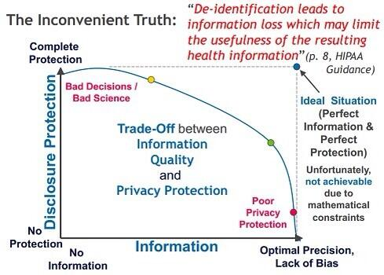
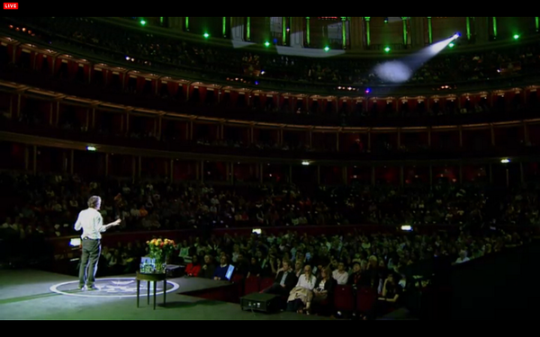
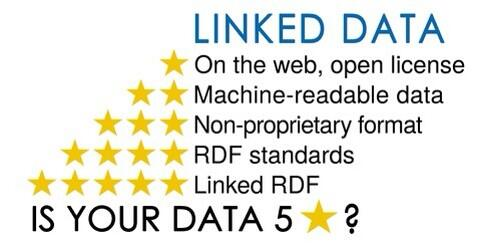
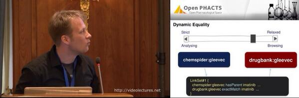
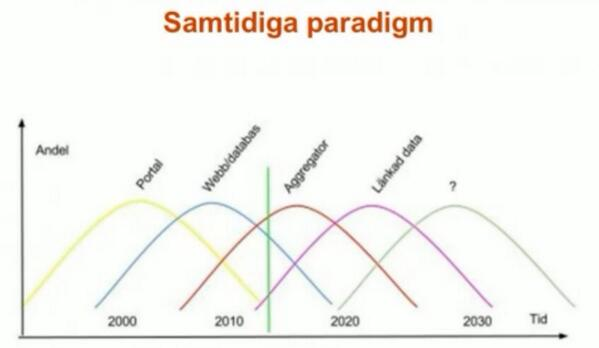

April 2014
”Rule 1: Love Your Data, and Help Others Love It, Too”
dx.doi.org/10.1371/journa…
by @aagie @pgroth @yolandagil etal via @soilandreyes
dx.doi.org/10.1371/journa…
by @aagie @pgroth @yolandagil etal via @soilandreyes
Cooö -> RT @mikeloukides: Exploring complex data with your fingers: a new approach, oriented towards tablets zite.to/S7dIBX
Interesting Data Integration tool #semanticweb HT @PaulZh -> MT @KarmaSemWeb: New release of Karma github.com/InformationInt…
Web Intelligence Summer School 2014, 225-29 Aug 2014, Saint-Étienne, France #WebofData via @MonsieurAZ emse.fr/~zimmermann/WI…
Extended the deadline to 15 May for International Conference on Biomedical Ontologies #ICBO2014 #icbo14 icbo14.com
I just registered for Big Data and Social Physics - join me on @edXOnline #mooc edx.org/course/mitx/mi…
@jamesofputney checkout @PHUSETwitta's conf with Transparency as the theme phuse.eu/annual-confere… / @bengoldacre spoke at the recent
MT @FourNova: Live trainings & learn version control with Git in a beginner-friendly way: git-tower.com/learn/online-t… via @dr_dobbs
At @chalmerslifesci's seminar "Getting out of shape – protein aggregation in neurodegenerative disease" chalmers.se/en/areas-of-ad… #Amyloidosis
David Haslam, NICE chairman: "..most people from the industry absolutely get this [the need for transparency]” pharmafile.com/news/185366/ni…
Excellent blog series by @baskaufs "Confessions of an RDF Agnostic (part 1)" bit.ly/1mLDQim #semanticweb
Max Kanensky, @pinnacle_21: "semantic web standards eg broader/narrower examples of what could improve #CDISC SHARE" bit.ly/1iV67Q6
Thanks @gmatczak for great comments on my post on #MOOCT / #citizenscience studies medium.com/p/c160ffcee523 #quantifieddiet
@lakemedel Hmm, känner igen det från min vardag på det stora företaget ... Just nu har jag nytta av att kunna peka på open.fda.gov
Job opportunity: Informatics Analyst R&D Information at AstraZeneca - Sweden #jobs lnkd.in/dFgTcw7
"API-centric Linked Data Integration ..." @pgroth et al websemanticsjournal.org/index.php/ps/a… Ping @andreaskrohn @nordicapis #apise
Build your own Knowledge Graph using @SindiceTech's Freebase Distribution sindicetech.com/freebase-distr… (ping @flandqvist and @Findwise Labs)
MT @lakemedel: Vad vill egentligen Läkemedelsverket m #oppnadata? vinnova.se/upload/EPiStor… <-Potential för #lankadedata

@Lilly_COI @PatientsFCR @ivsin @MightyCasey What I have Learned from Participating in a #MOOCT medium.com/p/c160ffcee523
What I have Learned from Participating in a “MOOCT” medium.com/p/c160ffcee523 #quantifieddiet /cc @tonystubblebine
First time I've paid for a MOOC certificat, Medical Adherence. King's College / @FutureLearn, kcl.ac.uk/experience-kcl… Not the last I guess
500 companies using govt open data @OpenData500. Companies *publishing* #opendata? eg. data.enel.com and data.sncf.com
Challenges Associated with Data-Sharing: HIPAA De-identification by @dbarthjones iom.edu/~/media/Files/…

Will the real drugs please stand up ? by @cdsouthan #chembl #chemicalstructures slideshare.net/cdsouthan/sout…
Two interesting initatives in UK for #datasharing #personaldata #privacy datasharing.org.uk and personal-data.okfn.org
@danbri Sensors: eg thermostats, pill bottles ( m2mnow.biz/2013/08/29/145… ) Devices: eg smartphone, gps Constructs: eg cars and homes...
.@cshirky @dweet_io How about a #LinkedData tweak on the awesome dweet.io ? ie URIs and #jsonld for #IoT
Ben Szekely, @CamSemantics mentions the RDF representation of @CDISC SDTM semanticweb.com/phuse-cdisc-an… in their webinar on "R&D Informatics"
I am going to the Nordic APIs meetup on May 6th in Gothenburg. Join me! #api #nordicapis via @nordicapis nordicapis.com/gothenburg-mee…
I've registered for @CamSemantics' webinar today 11 PST "R&D Informatics in the Age of Big and Messy Data" attendee.gotowebinar.com/register/73611…
#ImagineMed @bengoldacre calling for pharma leadership in transparency imaginemedicine.com/live/ [4.41] HT @ncbennevis

I talk about MOOCs also with friends and family. Here's one in an unusual domain for me: Equine Nutrition coursera.org/course/equinen…
Idea for @CDISC and @DataCourse: Add a week with #CDISC lectures, assignment, quizzes next time in this MOOC coursera.org/course/dataman…
CFP - LinkQS: Workshop on Linking The Quantified Self - (LQS 2014) #LinkedData #QuantifiedSelf linkqsws.wordpress.com
Great idea: "Follow This Drug" -> MT @iodine: How do you know when the FDA has changed your drug's label? feature iodi.ne/1kv4l8P
Bookmarked: "Computing limits on medicine risks based on collections of individual case reports" on CiteUlike ift.tt/1gMFGeM
(Re-post) Texas is the place for metadata/ontology nerds: @dcmi14 #dcm14 Austin 8-11 Oct and #icbo14 icbo14.com Houston 6-9 Oct
@bengoldacre @as2140 Yes if more informatics / data science tools produced/consumed w3.org/TR/2013/NOTE-p… and htmlpreview.github.io/?https://githu…
@bengoldacre Yes! A MOOC combining coursera.org/course/dataman… and coursera.org/course/datasci/ and edx.org/course/georget…
Texas is the place for metadata/ontology nerds: @dcmi14 #dcm14 Dallas 8-11 Oct and #icbo14 icbo14.com Houston 6-9 Oct
MT @eMagineKrystal: Is your #B2B #website #mobile friendly? <- Is it #opendata friendly? 5stardata.info

I just came across the term #Datathon - Like it -> MT @ddmcd: “How To Make Datathon Efforts Sustainable” ddmcd.com/datathon.html
“Employers are taking [#datascience] MOOCs seriously." @WSJ based on @BurtchWorks study on.wsj.com/1egy2uh
ICYMI: Digital natives ask what they can do *with* technology; data natives ask what technology can do *for* them: recode.net/2014/04/10/the…”
".. but it first had to find it. Doing so was a herculean task." bmj.com/content/348/bm… Tug of war for antiviral drugs data @juliaoftoronto
MT @uniprot: #sparql endpoint beta.sparql.uniprot.org Complementing www site <- Hope to see also #LinkedData APIs from more @IMI_JU projects
Biobanking and the ethics of sample collection youtu.be/yWkyYDwDbvk from @UBIOPRED Good preparation for @BioethicsMOOC starting tomorrow
Nice collection of tools for social innovation collected by @DIYtoolkit diytoolkit.org/tools/ HT @erikboralv
Bookmarked The Semanticscience Integrated Ontology (SIO) for biomedical research and knowledge discovery on C... ift.tt/1sXC26Y
Bookmarked Integrative knowledge management to enhance pharmaceutical R&D on CiteUlike ift.tt/1grj6Vv
Great idea -> RT @ManeeshJuneja: Use your body heat to power #wearabletech buff.ly/Q0Agmw #innovation
Data science - därför är det glödhett just nu computersweden.idg.se/2.2683/1.556241 <- Time for @ComputerSweden to add a #DataScience tag
"While data natives expect technology to be smart, they understand that a little human input goes a long way" on.recode.net/1sCofTk
"'data natives’ frustration with not-so-smart technology will make the promise of “big data” a reality" --@mrogati on.recode.net/1sCofTk
''Data Natives' <- Tomorrow's decisions makers. Recommend @mrogati's excellent @Recode post on.recode.net/1sCofTk
''Data Natives' <- tomorrow's medical treatment prescribers. Recommend @mrogati's excellent @Recode post on.recode.net/1sCofTk
''Data Natives' <- Tomorrow's clincial research participants. Recommend @mrogati's excellent @Recode post on.recode.net/1sCofTk
Tack Marcus -> RT @marcusosterberg: Anteckningar från frukosten om #oppnadata i onsdags. buff.ly/1hFZL22
Impressive set logos on our, @IMI_JU #EHR4CR @SALUSProject_EU @CDISC, #TBICRI14 presentation amia.org/jointsummits20…
MT @aaranged: distinguishing terms/concepts bit.ly/OEU0uz @UscholdM | And concepts/entities sciencecareers.sciencemag.org/career_magazin… cc @ajanefarris
It will be Interesting to see implications on future #CTdata management from @cochranecollab's #CochraneTamiflu cochrane.org/features/tamif…
Morning in Sweden, triggered by @rtroncy @Miel_vds #www2014 tweets in Korea I'm reading @pgroth's et al slideshare.net/pgroth/transpa… #TripleProv
On my way to an #opendata in Göteborg with @marcusosterberg @23Gears @karinahlin et al frilagret.se/event/open-dat… #oppnadata
. @LIFse Finns det planer på att publicera FASS som #oppnadata, #lankadedata? Se opengov.se/blogg/2010/fem…
Sorry I can't make it to #CDISCEurope this year, in Paris! I hope to see an interesting feed of tweets cdisc.org/interchange?a=…
I didn't do all assignments in #gamification14 MOOC but enjoy the comments on @Gartner_inc's new def. gtnr.it/QZNn8m ht @matsbjork
Rainy morning on the bus catching up on #www2014 from Korea, see also @Eventifier's nice collection eventifier.com/event/www2014/…
I've linked to @rzeiger's nice blog smartpatients.com/blog/co-sign-c… on co-signing prescriptions in the MOOC on Adherence futurelearn.com/courses/medici…
Just signed up to this #MOOC 'Medicines adherence' by @KingsCollegeLon @FutureLearn futurelearn.com/courses/medici… (only 2 weeks!)
FDA launches #openFDA Kudos to @DrTaha_FDA My blog post abvout the value in using #LinkedData principles kerfors.blogspot.se/2014/04/openfd…
Marc Andersen, StatGroup: Linked Data - What it is and the potential use in pharma programming, PhUSE, Denmark, June phuse.eu/Copenhagen2014…
FDA CDER Data Standards Strategy – Action Plan: "exploring the use of Semantic Web Technologies" #SemanticWeb fda.gov/downloads/Drug…
Nice #PhUSECSS poster: Using #SemanticWeb Technologies to Manage FDA Electronic Submissions Policy Information
phusewiki.org/docs/2014/CSS/…
phusewiki.org/docs/2014/CSS/…
@kidehen Of course. That link do not work for me now. How do I get to a spo version of eg uda.openlinksw.com/odbc-odbc-st/?
@kidehen See the tweet from Ted the other day twitter.com/TallTed/status… or give me another startingpoint for FYN
MT @egonwillighagen: Every PhD student must use Git (aka research data management) ift.tt/1q31Ydf /cc @ChalmersICT @ituniv
Why FHIR is so cool - also for clinical research cdisc-end-to-end.blogspot.se/2014/03/why-fh… nice blog post from Jozef Aerts, XML4pharma #FHIR
@Viperwoman66 We are working together with standard organizations such as CDISC to make that happen, see kerfors.blogspot.se/2014/02/why-i-…
@kidehen Hi Kingsley, I got bit.ly/1k5MfMW from @TallTed. Not working today. And I must admit I'm a bit confused of your FYN links.
MT @RebarInter: Twitter recap of #pctus. Will go up on Rebar blog probably tomorrow. In the meantime rbr.cm/OfTC5s <- cool
Cool: @pgroth talks about Scientific Lense and Dynamic Equality in @Open_PHACTS videolectures.net/dataforum2014_…

Webbinarium med @henriksummanen om erfarenheter kring #LankadeData #OppnaData på @raa_se metasolutions.se/2014/03/webbin…

Good day to ensure my #ctdata #transparency list twitter.com/kerfors/ctdata… is up to date by checking it against the #AllTrials feed
Ex. of corporations with #opendata sites as suppl. to www data.enel.com and data.sncf.com (HT @FroehlichMarcel)
@PeterSpeyer data scientist, data wrangler, data janitor (in no order) see twitter.com/kerfors/status…
New blog post about the great @openFDA project and the utility of linked data kerfors.blogspot.se/2014/04/openfd… #openFDA #LinkedData
I've updated my #LinkedData resource page kerfors.blogspot.se/p/linked-data-… with the nice video: Why Linked Data? HT @gothwin
@trialsonline @ivsin @Lilly_COI @Novartis @pfizer Idea: Use FDA/PhUSE work: RDF for protocol snd analysis results phusewiki.org/wiki/index.php…
EHR4CR - Electronic Health Records for Clinical Research: youtu.be/Wcsl064F2pk via @YouTube <- Nice! The #EHR4CR is a @IMI_JU project
Great blog post with an alternate future for cryptocurrencies "The Fifth Protocol" wp.me/psk70-1Vy3F by @naval via @kidehen
"It is important that standards are open and reasonably flexible" nature.com/nrd/journal/v1… And use standards e.g. CDISC represented in RDF
+10 MT @vrandezo: #qLabel, a JS library to write in 300+ languages using #Wikidata, #Freebase #SemanticWeb google-opensource.blogspot.com/2014/04/qlabel…